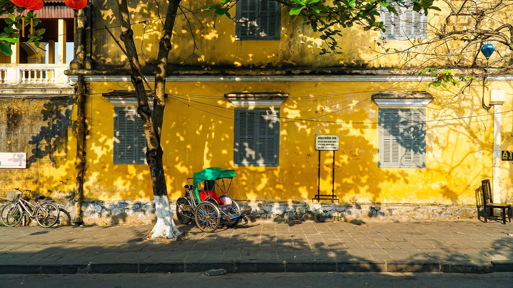

HỘI AN
Hội An là nơi nhịp tiến của thời gian chậm lại thành bước đi thong thả. Trong thương cảng một thời sầm uất này, sông Thu Bồn uốn lượn qua những dãy nhà cổ rêu phong và những ngôi chùa rạng màu thời gian, trong khi những chiếc ghe nhỏ vẫn nhộn nhịp đến rồi đi từ bến phà cũ. Ra ngoài khu phố cổ, những con đường hai làn xe cắt ngang cánh đồng lúa xanh rì và dẫn đến đường bờ biển trắng xóa sóng vỗ. Dừng chân vài ngày thôi, vẻ đẹp thanh bình và những đêm lung linh đèn lồng của Hội An có thể sẽ khiến bạn mê mẩn không rời. Hành trình đến Hội An đang chờ bạn! Hãy khám phá những trải nghiệm dưới đây để chuẩn bị cho chuyến đi sắp tới.

Những điều nên làm ở Hội An
Lạc bước trong phố cổ
Từ thế kỷ 15 đến 19, thương nhân từ Trung Quốc, Nhật Bản và sau này là châu Âu đã đến định cư, tạo nên một nét kiến trúc giao thoa độc đáo. Đừng quên mang theo máy ảnh để ghi lại những khoảnh khắc tại Chùa Cầu Nhật Bản, nhà cổ Tấn Ký và Hội quán Phúc Kiến.
Thưởng thức ẩm thực đặc sản
Ẩm thực Hội An là một niềm vui trọn vẹn. Rau củ, hải sản, thảo mộc và trái cây tươi được đưa từ vườn và thuyền đánh cá vào chợ mỗi ngày. Ba món ăn tiêu biểu bạn nên thử là Cao Lầu, Hoành Thánh và bánh bao hoa hồng trắng.
Đạp xe qua làng quê
Bình minh ở Hội An là thời điểm tuyệt vời để đội mũ, lên xe đạp và thong dong trên những con đường làng. Bạn sẽ bắt gặp biển lúa xanh ngút mắt, trâu nước ung dung vẫy đuôi. Ở Cẩm Thanh và Trà Quế, bạn sẽ đi ngang qua vườn rau và ao hồ phủ bóng dừa nước.
Tận hưởng biển xanh
Biển An Bàng, chỉ cách phố cổ 10 phút chạy xe, hứa hẹn bữa trưa hải sản tươi, bãi cát mịn và làn sóng mát lành. Hãy mang theo sách, khăn tắm, bikini; hoặc lên thuyền đến những bãi biển nguyên sơ ở Cù Lao Chàm.
Ngỡ ngàng trước Mỹ Sơn
Thánh địa Mỹ Sơn – Di sản Văn hóa Thế giới được UNESCO công nhận – nằm cách Hội An 40km. Ẩn mình trong thung lũng bên dòng suối rợp bóng cây, các ngôi đền này được người Chăm xây dựng, với những công trình còn sót lại có niên đại từ thế kỷ 7 đến 13.
Thời tiết Hội An
Từ tháng 10 đến tháng 1 thường có mưa và đôi khi bão. Nếu đến vào đầu năm, bạn nên mang thêm áo ấm. Thời gian đẹp nhất để ghé thăm là từ tháng 3 đến tháng 5, hoặc từ tháng 6 đến tháng 8 nếu bạn không ngại cái nóng.
Di chuyển ở Hội An
Sân bay quốc tế Đà Nẵng cách phố cổ khoảng 50 phút đi ô tô. Có các chuyến bay nội địa từ những thành phố lớn của Việt Nam đến Đà Nẵng, cũng như chuyến bay thẳng từ một số điểm trong khu vực. Bạn cũng có thể đến Hội An bằng xe buýt hoặc xe đưa đón từ các điểm gần như Nha Trang, Đà Nẵng hoặc Huế. Trong phố cổ và vùng quê, đi bộ hoặc đi xe đạp là lựa chọn lý tưởng. Taxi và ứng dụng gọi xe cũng rất tiện để di chuyển. Hỏi khách sạn để thuê xe riêng nếu muốn đi xa hơn.